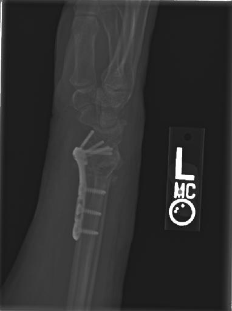
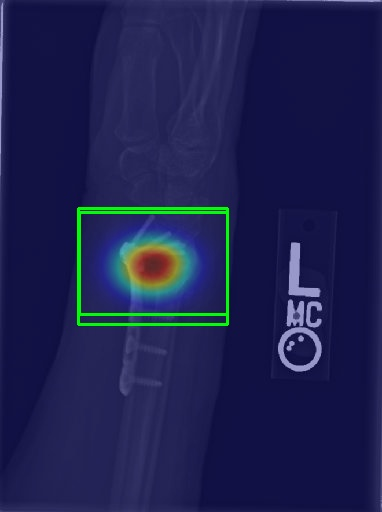
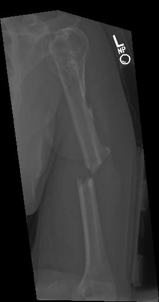

01
Upload
A JPG or PNG X-ray is sent from the browser to the FastAPI backend.
OrthoLens AI can create a heatmap-style visualization around detected regions so you can inspect the model output alongside the original X-ray.


The current OrthoLens workflow keeps the visual output close to the detection result so the user can inspect what the model identified.
A JPG or PNG X-ray is sent from the browser to the FastAPI backend.
The trained YOLO model processes the image and returns any regions it detects.
The prototype uses the detected bounding regions to build a heatmap-style visual overlay.
The original image and generated visualization can then be viewed side by side.
In this project version, the explanation image is a prototype heatmap generated from detected regions. It should not be described as a verified gradient-based Grad-CAM implementation.
Drag the divider across each example to compare the source X-ray with the available visualization.
A direct visual comparison between the source image and the project's generated highlighted view.


Another example showing how the original radiograph compares with the project's visual explanation output.
Upload an X-ray in the detection workspace and inspect the generated result and available explanation image.
Open OrthoLens AI detector